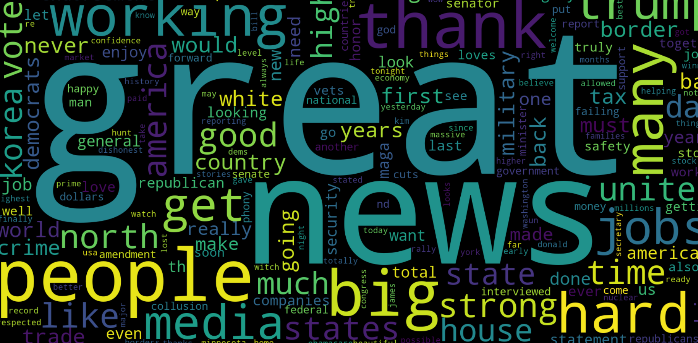
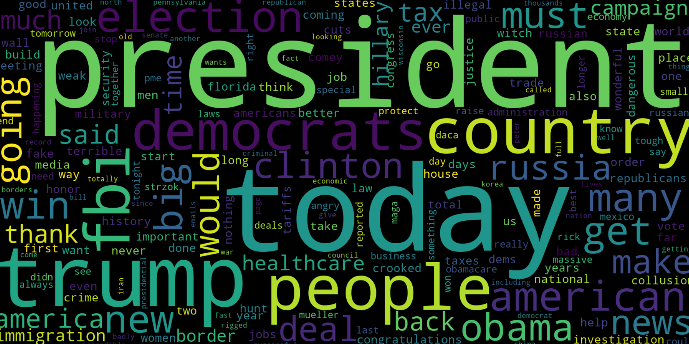
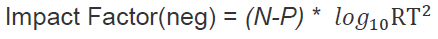

과거에는 소수의 사람들만이 이야기를 만들고, 전달할 힘을 가졌다.
그러나 현대에는 SNS 등 뉴 미디어의 발달로 인해
어떤 한 개인도 자신의 이야기를 세상에 전달할 수 있다.
SNS, 그 중에서도 트위터는 개인의 이야기가 만들어져
세상의 이야기를 이루는 곳이다.
이런 SNS의 강력한 이야기꾼들은 인터넷 속에서만이 아니라,
인터넷 밖의 세상에도 강한 영향을 미치며 세계를 흔들기도 한다.
이런 점에서 우리는 도널드 트럼프 美 대통령의 트위터에 주목하였다.
트럼프 대통령은 헤비 트위터리안으로써 하루에도 수많은 트윗을 작성하고,
민감한 이슈에 대한 트윗을 남기는 데에도 거리낌이 없다.
또한 그의 트윗에 수많은 사람들이 반응하고 공유하여,
인터넷 상에서도 트럼프 대통령은 '트위터 대통령'으로서 자리매김하고 있다.
우리는 이러한 그의 트윗 속 이야기를 살펴봄으로써,
세계 속 이야기를 들여다 볼 수 있는 '눈'을 만들어보고자 한다.

MILLION
23. MAR. 2016. [6,537 RT & 20,143 LIKE]
"I will be the best by far in fighting terror. I'm the only one that was right from the beginning, & now Lyin' Ted & others are copying me"
11. JUN. 2016. [9,966 RT & 30,623 LIKE]
"Mitt Romney had his change to beat a failed president but he choked like a dog. Now he calls me racist-but I am least racist person there is"
23. JAN. 2016. [2,625 RT & 7,175 LIKE]
"I will be the greatest job-producing president in American history"
8. MAY. 2013. [134,951 RT & 157,437 LIKE]
"Sorry losers and haters, but my I.Q. is one of of the highest - and you all know it! Please don't feel so stupid or insecure, it's not your fault"

22. MAR. 2013.
- Still waiting for coward @realDonaldTrump to tell me what in my 'past' I should be ashamed of.
"@ You were born stupid!"
24. AUG. 2018. [51,609 RT & 180,937 LIKE]
"Social Media Giants are silencing millions of people. Can't do this even if it means we must continue to hear FAKE NEWS like CNN, whose ratings have suffered gravely. People have to figure out what is real, and what is not, without censorship!"
11. APR. 2018. [61,843 RT & 165,065 LIKE]
"Russia vows to shoot down any and all missiles fired at Syria. Get ready Russia, because they will be coming, nice and new and 'smart!' You shouldn't partners with a Gas Killing Animal who kills his people and enjoys it!"

트럼프의 트위터 속 우리의 세계는 어떻게 표현되어 있을까?

딥러닝을 활용한 트럼프의 트위터 감정분석 및 영향도 분석
bs4, selenium, requests 등의 라이브러리를 이용하여 당선 이후 트럼프 대통령의 모든 트윗을 크롤링하였다.
이후 NLTK 등의 라이브러리를 이용하여 해시태그, URL, 기호, 비영어 등을 일괄적으로 제거하는 전처리 과정을 거쳤다.
이를 이용하여 WordCloud 툴을 통해 워드 클라우드 형태로 비주얼라이제이션하였다.
트위터 데이터와의 비교를 위해 다우존스(DJI), 나스닥(^IXIC), 상하이증시(000001.SS), 코스피(KS11) 등 각종 경제지표 데이터를 수집하였다.
스탠포드, 미시간 대학교의 공개 데이터(160만 여개)를 이용하여 머신러닝, 이를 토대로 단어들을 Vecterizaion하였다.(BOW, TFIDF 두가지 Method 이용)
이를 바탕으로 Sentiment Analysis(문장의 긍/부정도 구분)가 가능한 머신을 학습시키고(모델의 정확도를 나타내는 F1 Score:각각 78, 83 ), 이를 이용해 트럼프 트윗들의 감정지표를 도출하였다.
SNS의 특성상 RT의 수로 대표되는 2차 네트워크 전달이 가능하다는 면에서 Sentiment 지표와 RT 수를 활용하여 Impact Factor라는 새로운 지표를 만들었다.

주제별 트럼프 트윗의 국제 경제지수 상관관계 분석
전처리된 데이터를 이용해 트럼프의 트위터에서 자주 등장하는 단어들로 워드 클라우드를 그렸다. 이 워드 클라우드에서 의미 있는 이야기의 주제들을 선정하였다.
선정된 주제 별로 트럼프의 전체 트윗을 분류하였고, 트윗의 부정감정도와 Impact Factor의 추이를 비주얼라이제이션 프로그램인 Tableau를 사용해 그래프로 나타냈다. 이를 통해 트럼프가 각 주제에 대해 어떤 감정을 가지고 이야기를 하는지 살펴보았다. 특히 그래프에서 부정도 및 Impact Factor가 높거나 오래 지속되는 기간에 주목하였다.
트럼프의 이야기의 부정도 및 Impact Factor가 높거나 오래 지속되는 기간에 세계에서는 어떤 일들이 벌어졌을까? 트럼프가 부정적인 감정을 표출하며 이야기를 하게 된 배경을 정성적 조사를 통해 파악해보았다.
부정적인 감정과 복잡다단한 맥락이 담긴 트럼프의 트윗은 세계에 어떤 영향을 미쳤을까? 트럼프의 이야기가 전세계의 실물경제지표와는 어떤 상호작용을 하는지 살펴보았다. 이를 다우존스(DJI), 나스닥(^IXIC), 상하이증시(000001.SS), 코스피(KS11)의 변동률을 통해 설명해보았다.
트위터는 흔히 ‘감정 쓰레기통’이라고 불린다. 부정적인 감정을 트위터에 쏟아내면서 감정을 해소하는 사람들이 있기 때문일 것이다. 트럼프도 마찬가지이다. 하지만 트럼프는 미국의 대통령이다. 따라서 그가 올리는 트윗이 세계에 영향을 미칠 것임은 당연하다. 그렇다면 트럼프가 트윗에 싣는 감정과 트윗의 영향도가 세계에 영향을 미치고 있을 가능성이 높다고 생각해볼 수 있다. 우리는 이러한 막연한 생각을 데이터 분석을 통해 직접 확인해보고자 했다.
처음 프로젝트를 시작했던 단계에서는 트럼프 트윗의 감정도와 영향도가 세계경제지표(주가)에 영향을 주는 요인일 수 있다는 가설을 바탕으로 접근을 시도해보았다. 하지만 주가에 영향을 주는 요인들은 굉장히 많고 그 영향이 복합적이다. 트럼프의 트윗도 그 중 하나의 요인이 될 수 있겠지만 트윗이라는 하나의 요인으로 주가의 변동을 설명하는 것은 불가능하다.
그러나 우리는 트럼프 트윗의 감정도 및 영향력 분석을 통해 세계정세와 국제 경제의 흐름을 볼 수 있는 지점들을 여럿 발견하였다. 정치적 적수였던 ‘Hillary’에 대한 트윗의 감정x영향지수의 분석을 통해 미국 내의 주요 정치 이슈들을 발견할 수 있었다. 또한 트럼프가 강조하는 ‘Trade’에 대한 감정x영향지수 분석을 통해 NAFTA 협상과 관련된 일련의 사건과 이것이 주가에 미친 영향에 대한 분석으로까지 나아갈 수 있었다. ‘China’에 대한 감정x영향지수 분석은 대중 무역전쟁의 전조를 암시했던 트럼프의 생각을 드러냈을 뿐만 아니라, 대통령이 되기 전이었음에도 중국과 미국의 주가에 상당한 영향을 미친 트윗의 영향력을 실감할 수 있게 해 주었다. 실제로 트위터의 감정x영향지수와 상하이 지수의 회귀분석을 진행해본 결과 유의미한 음의 상관관계가 있다는 점도 확인할 수 있었다. 마지막으로 ‘Korea’에 대한 감정x영향지수 분석은 우리가 만들어낸 툴이 트윗의 맥락을 포함하기에는 부족한 모델이었다는 점을 드러내주었지만, 우리는 맥락 조사를 함께 진행하여 이를 보완하였다.
결국 트럼프의 트윗은 세계에서 발생한 주요 사건들의 맥락 속에서 작성된 것이고, 트럼프의 행동은 세계에 큰 영향을 미친다. 따라서 트럼프의 생각을 직접적으로 드러내는 트윗은 사건들 사이의 연결고리의 역할을 하는 중요한 지점이라고 볼 수 있다. 우리의 프로젝트는 감정x영향지수 분석을 통해 트럼프 트윗의 속성을 정략적으로 파악할 수 있는 하나의 지표를 제안했을 뿐만 아니라, 트윗이 나온 맥락과 영향에 대한 분석을 통해 지표를 활용할 수 있는 방법들을 개발하고 시도해보았다는 의의를 지닌다.
DEC. 4. 2016.
Did China ask us if it was OK to devalue their currency (making it hard for our companies to compete), heavily tax our products going into...
DEC. 4. 2016.
their country (the U.S. doesn't tax them) or to bulid a massive military complex in the middle of the South China Sea? I don't thik so!
DEC. 17. 2016.
China steals United States Navy research drome in international waters - rip it out of water and takes it to China in unprecedented act.
NOV. - DEC. 2016
“China” 키워드에 대한 부정적인 감정의 지수가 가장 높았던 트윗은 2016년 12월 4일올라온 트윗이다. 해당 트윗의 내용은 중국과의 무역에 관한 부분을 담고 있다. 중국의 위안화가 평가절하 되어 있기 때문에 무역에서 우위를 점하고 있고, 또 대미 수입 상품에 대해 과한 관세를 매기고 있다는 것이다. 실제로 이 시기는 미국의 대중 무역적자가 심각한 상태이며, 트럼프 대통령 당선자의 임기가 시작된다면 공약으로 내세웠던 보호무역의 칼날이 중국을 향할 것이라는 전망이 나오기 시작할 때였다.(초이스경제, 2016.11.29) 그리고 트윗이 올라온 다음 날(12월 5일) 중국 상하이종합 지수는 전일 대비(개장일 기준) 1.2% 하락하였는데, 일별 변화율 평균이 –0.03%, 표준편차가 0.94%라는 것을 고려하였을 때 이 변화율은 상당히 큰 수치라고 할 수 있다. 같은 날 다우존스는 0.24%, 나스닥은 1.01% 상승하였다.이처럼 트럼프의 부정적 트윗이 중국의 경제에는 부정적인 전망을, 미국의 경제에는 긍정적인 전망을 가져다주는 영향력을 발휘한 것을 볼 수 있다.
AUG. 25. 2018.
Our relationship with Mexico is getting closer by the hour. Some really good people within both the new and old government, and all working closely together....A big Trade Agreement with Mexico could be happening soon!
SEP. 1. 2018.
There is no political necessity to keep Canada in the new NAFTA deal. If we don’t make a fair deal for the U.S. after decades of abuse, Canada will be out. Congress should not interfere w/ these negotiations or I will simply terminate NAFTA entirely & we will be far better off...
SEP. 1. 2018.
Remember, NAFTA was one of the WORST Trade Deals ever made. The U.S. lost thousands of businesses and millions of jobs. We were far better off before NAFTA - should never have been signed. Even the Vat Tax was not accounted for. We make new deal or go back to pre-NAFTA!
AUG. - SEP. 2018
“Trade”라는 키워드에 대한 트윗 중 가장 긍정적 감정도가 높았던 것은 2018년 8월 25일, 부정적 감정도가 높았던 것은 9월 1일에 올라온 트윗이다. 이 시기에는 멕시코와의 NAFTA 재협상이 체결되고(8월 29일), 캐나다와의 NAFTA 협상이 이루어지던 중이었다. 당시 긍정적인 트윗은 멕시코와의 좋은 관계를 언급하고 큰 규모의 무역 협정이 이루어질 것임을 밝히고 있다. 부정적 트윗은 기존 NAFTA가 여태까지 있었던 무역 협정 중 최악의 협정이었다는 내용과, 캐나다를 새로운 NAFTA 협정에 포함해야 할 이유가 없다는 내용을 담고 있다. 이러한 내용은 트럼프의 정치 노선과의 접점이 많다고 할 수 있다. 트럼프 대통령은 후보 시절부터 NAFTA가 미국 내 일자리 감소와 무역 적자의 주 원인임을 지적해왔다. 그래서 당선 이후 2017년 8월부터 NAFTA 재협상을 시작하였고, 실제로 2018년 9월 30일 캐나다와도 합의를 이루며 새롭게 미국·멕시코·캐나다 협정(USMCA)을 타결시켰다. 그러나 멕시코와는 비교적 단시간 내에 긍정적인 합의를 이루는 데 성공하였으나 캐나다와의 협상은 순탄치 않았다. 당시 NAFTA 합의의 최전선에 있던 캐나다 외교장관 크리스티아 프리랜드가 자국 내 초강경파 인물로서 한 치 양보 없는 협상을 이어가고 있었기 때문이다. 따라서 트럼프 대통령의 긍정적 트윗은 양보를 통해 빠르게 긍정적 합의를 도출해낸 멕시코 정부에 대한 긍정적 입장을, 부정적 트윗은 긍정적 합의를 이루어내지 못 한다면 캐나다를 이번 협상에서 제외하겠다는, 강경한 입장을 밝히기 위한 것으로 분석된다. 이 시기 미국 다우 존스와 나스닥 지수는 8월 27일(26일은 주말로 휴장) 전일 대비 각각 1.0%, 0.91% 상승하였고 협정 체결이 이루어진 29일까지 상승세를 이어갔다. 그 이후로는 캐나다와의 협상 난항과 부정적인 전망으로 인하여 9월 4일까지 하락세가 나타났다.
AUG. 13. 2018.
Agent Peter Strzok was just fired from the FBI - finally. The list of bad players in the FBI & DOJ gets longer & longer. Based on the fact that Strzok was in charge of the Witch Hunt, will it be dropped? It is a total Hoax. No Collusion, No Obstruction - I just fight back!
AUG. 13. 2018.
Just fired Agent Strzok, formerly of the FBI, was in charge of the Crooked Hillary Clinton sham investigation. It was a total fraud on the American public and should be properly redone!
AUG. 14. 2018.
Fired FBI Agent Peter Strzok is a fraud, as is the rigged investigation he started. There was no Collusion or Obstruction with Russia, and everybody, including the Democrats, know it. The only Collusion and Obstruction was by Crooked Hillary, the Democrats and the DNC!
JUL. - SEP. 2018
키워드 “Clinton”에 대해 부정적 감정도가 가장 높은 트윗은 2018년 8월 13일에 올라온 트윗이다. 그 내용은 FBI 요원 스트르조크가 해임되었으며 힐러리 클린턴 “이메일 스캔들”에 대한 조사가 완전히 잘못된 것이었다는 것이다. 스트르조크는 2015년~2017년 동안 FBI 변호사 리사 페이지와 주고받은 메시지에서 트럼프 대통령에 대해 “바보”, “끔찍하다” 등의 언급을 한 것으로 밝혀졌다. 이 사실이 밝혀지며 러시아 스캔들 조사에서 제외되었고 백악관과 공화당의 꾸준한 비난 이후 결국 FBI에서도 해임된 것이다. 이 소식을 접한 트럼프 대통령은 트위터를 통해 그가 참여한 이메일 스캔들 조사 또한 완전히 잘못된(Crooked) 조사였음을 꼬집었다. 이날 올라온 다른 트윗을 보면 트럼프 대통령이 이 정보를 이용하여 자신에 대한 의혹 제기를 ‘마녀 사냥’(WItch Hunt)이라고 규정하며 결백함을 주장하려 한다는 것을 볼 수 있었다. 다른 트윗은 스트르조크의 해임 사실을 밝히며 FBI와 법무부에 잘못된 인물이 너무 많아졌다고 주장하고 있다. 그리고 이와 함께 자신에 대한 마녀사냥에 대해 맞서 싸우겠다고 말하고 있다. 이처럼 트럼프의 강력한 감정이 드러난 트윗을 통해 당시 정세의 민감한 이슈를 읽어낼 수 있었다.
JUN. 13. 2018.
So funny to watch the Fake News, especially NBC and CNN. They are fighting hard to downplay the deal with North Korea. 500 days ago they would have “begged” for this deal-looked like war would break out. Our Country’s biggest enemy is the Fake News so easily promulgated by fools!
JUN. 13. 2018.
Just landed - a long trip, but everybody can now feel much safer than the day I took office. There is no longer a Nuclear Threat from North Korea. Meeting with Kim Jong Un was an interesting and very positive experience. North Korea has great potential for the future!
JUN. 13. 2018.
Before taking office people were assuming that we were going to War with North Korea. President Obama said that North Korea was our biggest and most dangerous problem. No longer - sleep well tonight!
NOV. - DEC. 2016
키워드 “Korea”에 대한 가장 강한 부정적 감정도는 2018년 6월 13일의 트윗에서 발견되었다. 이 날은 싱가포르에서 북미정상회담이 열린 다음 날이었다. 사실 연구의 한계로도 볼 수 있는 문제인데, ‘War’라는 부정적인 단어로 인해 부정적 감정의 정도가 높게 나타난 것이다. 이는 머신 러닝이 문장의 맥락 분석에는 취약하다는 점을 드러내는 사례로 볼 수 있다. 그렇다 하더라도 RT 수가 굉장히 커 영향력 factor 또한 높은 수치로 드러났다. 따라서 강한 영향력을 주목한 결과 실제로 정세의 흐름을 볼 수 있었다는 점에서 의미를 발견할 수 있었다. 이 시기 트럼프는 트위터를 통해 북미정상회담 이슈를 계속해서 언급하고 있다. 다른 트윗에서도 성공적인 북미정상회담의 결과를 알리고 회담을 부정적으로 다룬 미국 내 언론들을 상대로 Fake News라 비난하는 모습을 보이고 있었다. 한편, 같은 날 KOSPI 지수는 이전까지의 상승세를 이어가지 못하고 전일 대비 1.842% 하락하였다. 이 같은 결과는 북미정상회담의 결과에 대한 실망이 반영되었다고 할 수 있다. 전문가들의 평가에 의하면 북한은 미국으로부터 양보를 이끌어내는 데 성공하였으나 미국은 비핵화를 위한 구체적인 일정을 얻어내지 못하고 실질적 진전을 이루어내지 못했기 때문이다.(출처 : CNBC.com, 2018.06.12.)주가의 흐름은 이 평가를 반영하며 6월 11일 회담에 대한 기대감으로 전일대비 0.76% 상승하였으나 실제로 회담이 이루어진 12일부터는 하락세에 있었다.(12일 –0.05%, 13일 –1.842%)